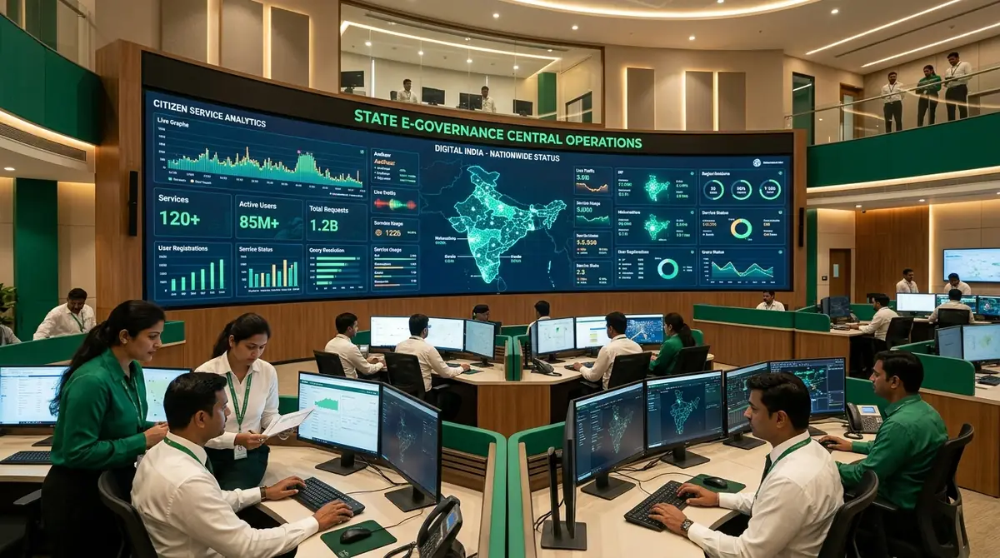

About the Government Portal
Pioneering citizen-first digital governance, uncompromised transparency, and inclusive public service delivery across every district and panchayat.
Building a Transparent and Inclusive India
The Government Portal represents the unified digital gateway for all citizen-centric public utilities, welfare disbursements, and administrative services. Launched under the Digital Public Infrastructure mandate, our objective is to eliminate traditional bureaucratic bottlenecks and provide every resident equitable, dignified access to their rights and entitlements.
By uniting over 25 municipal, revenue, healthcare, and educational departments into a singular microservice architecture, we guarantee tamper-proof records, instant certificate validation, and real-time grievance tracking with direct collectorate accountability.

Mission & Vision
Anchoring governance in democratic principles, technological excellence, and public service integrity.
Our Mission
To make every state and central public service 100% accessible digitally, completely paperless, and delivered within legally mandated service level agreements (SLAs) without citizen friction.

100% Digital Public Delivery
Unified citizen service centers ensuring zero queues and end-to-end paperless access.
Our Vision
An inclusive, digitally sovereign society where every citizen—from metropolitan hubs to remote rural villages—experiences equal, corruption-free governance and seamless welfare rights.

Digital Sovereign Society
Next-generation smart governance bridging remote villages with real-time administration.
Data Trust & Security
State-of-the-art encryption, zero-knowledge architectural privacy, strict adherence to Digital Personal Data Protection laws, and multi-tier sovereign data centers.
Encrypted Sovereign Trust
Zero-knowledge cryptographic security, DPDP compliance, and state data sovereignty.
Milestones in Digital Governance
Tracing the evolutionary steps from traditional paper registries to India's unified citizen portal.
Initiation of nationwide optical fiber broadband connectivity across gram panchayats and integration of basic digital citizen lockers.
Connecting JAM Trinity (Jan Dhan, Aadhaar, Mobile) to eliminate leakage and disburse scholarships and subsidies directly to beneficiaries.
Convergence of district administration, commercial taxes, revenue registries, and municipal services into an integrated online interface.
Autonomous document validation, AI-guided application filing, real-time grievance escalation to District Collectors, and bilingual accessibility.
Leadership & Governance
Steered by distinguished public servants dedicated to ethical administration and digital innovation.
Dr. K. Rajasekhar, IAS
Chief Secretary to Government
IAS • Apex Civil ServiceOver 28 years of civil administrative experience leading statewide administrative reforms and digital inclusion programs.
Padmini Sundaram, IAS
Commissioner of e-Governance
IAS • e-Gov DirectoratePioneered the Salem District Smart Collectorate model and automated grievance resolution frameworks.
R. Karthikeyan
State Technology Director
Digital Infrastructure DivisionArchitect behind the high-availability cloud infrastructure handling over 5 million daily citizen transactions.
Dr. S. Meenakshi, IAS
Addl. Chief Secretary (Finance & IT)
IAS • Fiscal SystemsChampioning direct fiscal allocations, transparent procurement portals, and statewide fintech inclusion initiatives.
V. Sundaram, IPS
Director General (Cyber & Security)
IPS • Cyber CommandDirecting state-level cyber crisis response, zero-trust infrastructure, and critical citizen identity safeguarding.
Dr. K. Rajasekhar, IAS
Chief Secretary to Government
IAS • Apex Civil ServiceOver 28 years of civil administrative experience leading statewide administrative reforms and digital inclusion programs.
Padmini Sundaram, IAS
Commissioner of e-Governance
IAS • e-Gov DirectoratePioneered the Salem District Smart Collectorate model and automated grievance resolution frameworks.
R. Karthikeyan
State Technology Director
Digital Infrastructure DivisionArchitect behind the high-availability cloud infrastructure handling over 5 million daily citizen transactions.
Dr. S. Meenakshi, IAS
Addl. Chief Secretary (Finance & IT)
IAS • Fiscal SystemsChampioning direct fiscal allocations, transparent procurement portals, and statewide fintech inclusion initiatives.
V. Sundaram, IPS
Director General (Cyber & Security)
IPS • Cyber CommandDirecting state-level cyber crisis response, zero-trust infrastructure, and critical citizen identity safeguarding.
Departmental Hierarchy & Matrix
A multi-tiered administrative structure engineered to eliminate silos, ensure auditability, and speed up direct citizen delivery.
State Ministry Level
Statutory oversight, legislative budget sanctions, and state digital policy formulation headed by the Cabinet Secretariat.
e-Governance Directorate
Unified cloud core architecture, Digi-Locker APIs, cryptographic certificate issuance, and cybersecurity operations.
District Collectorates
Headed by the District Collector (Salem & 37 other districts), managing grievance days, revenue appeals, and welfare audits.
Taluk & e-Seva Centers
Village Administrative Officers (VAO), Revenue Inspectors, and grassroots e-Seva kiosks serving citizens locally.
Citizen Charter & RTI Accountability
Our services are governed by strict Right to Public Services legislation with legally enforceable timeframes.
Certificate & License Delivery
Birth, Income, Community, and Driving License renewals are processed within predefined days. Automatic escalation occurs if unapproved.
Grievance Redressal Mechanism
Every lodged civic grievance receives an automated SMS token. Concerned executive engineers or Tehsildars must provide a formal resolution plan within 48 hours.
Right to Information Electronic Filing
Citizens can file digital RTI applications online for just ₹10. Public Information Officers (PIOs) furnish authenticated records digitally.